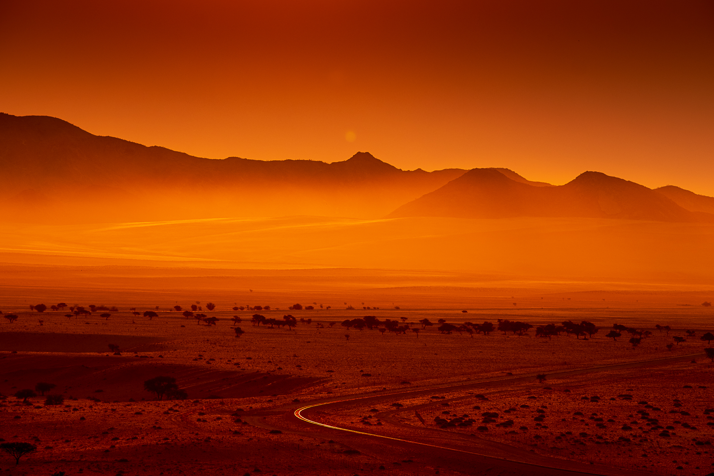

Copyright 2025 UNDERLYS / Thomas Amund Johnsen
Instagram @johnsenphotography
95907675
thomas@underlys.no
UTDANNING
2022 Morten Krogvold workshop trinn 1, 2, 3, 4
2019 Kunstfotografutdanning (60sp) Cape Town School of Photography
2005 Cand. Philol. i filosofi (360sp) Universitetet i Oslo
UTSTILLINGER
2025 Bravehearts, Vestfoldmuseene
2023 Rom for melankoli, Oslofjordens Kunstsenter
2020 Alumni, Cape Town School of Photography
2019 Alumni, Cape Town School of Photography
2018 Eksamen, Cape Town School of Photography
2006 Snapshots fra slummen, Galleri Naver Stavern
2004 Mellom spire og forvitring, Galleri Naver Stavern